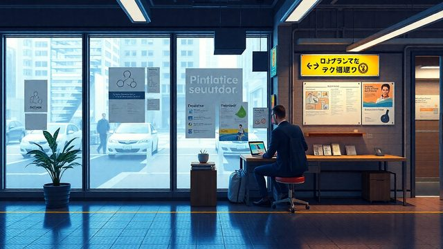

CH02-045 — images
【無意識の摂取】情報を食べ続ける理由
ep
CH02
Script Viewer
snapshot
guide
script
audio
thumb
images
CH02-045
images
updated_at: 2026-01-12T10:15:07.743046Z
run_id:
CH02-045_mix433_20260106
CH02-045
情報の飲み過ぎ／情報のバランス
CH02-045
情報の消化不良／判断力の枯渇
CH02-045
感情を揺さぶる情報／浅い理解
CH02-045
動機の曖昧さ／信頼基準の欠如
CH02-045
フィルターバブル／異なる水温
CH02-045
時間帯の設定
CH02-045
通知の切り刻み／注意の守り方
CH02-045
問いのフィルター／複数視点の比較
CH02-045
一次情報の重さ
CH02-045
情報の咀嚼
CH02-045
情報の棚卸し
CH02-045
情報入口の絞り込み
CH02-045
情報の温度
CH02-045
情報断食
CH02-045
知らないことを許容／情報の置き場所
CH02-045
情報の比較
CH02-045
体の状態と情報
CH02-045
時間の枠／呼吸で区切る／情報の出所を疑う
CH02-045
行動に落とす
CH02-045
情報経済の仕組み
CH02-045
情報の断捨離／情報の儀式化
CH02-045
情報のない時間
CH02-045
情報の癖
CH02-045
情報の確認／「今日の問い」
CH02-045
デジタル環境の整理／情報の枠分け
CH02-045
書き写す効果／余白の重要性／情報の確認
CH02-045
体のサイン／情報のシェア
CH02-045
哲学者の教え／静けさの価値
CH02-045
脳の作業スペース
CH02-045
摩擦の追加／情報の三つの箱
CH02-045
寝る前の情報
CH02-045
情報の育て方／好奇心の向き先
CH02-045
知らないことを認める
CH02-045
信頼できる情報源／深い会話
CH02-045
客人としての情報選択／情報日記の効果／ドゥームスクロールの…
CH02-045
情報の場所分け／静置時間
CH02-045
完全な空白時間
CH02-045
感覚の回復／情報との距離／情報の軸
CH02-045
体の休息
CH02-045
静けさと好奇心／情報の道具化
CH02-045
井戸を掘る
CH02-045
未来の自分へ
CH02-045
小さな空白
CH02-045
世界を見る準備／情報の必要性

CH02-045
情報の血肉化／情報の循環